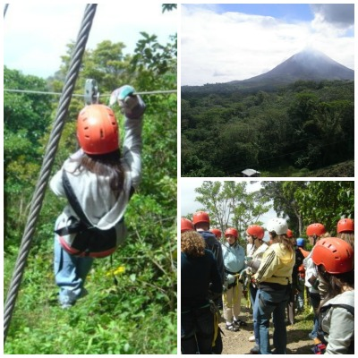

---
layout: default
---
Zip-lining over Monteverde, Costa Rica
February, 2008 | Posted: 5/6/2015
The mantra of Costa Rica, in all of its glorious essence, is the phrase Pura Vida. Pura Vida means pure life and it is the most common expression you will hear in Costa Rica. The words can be used as a welcoming hello or a synonym to describe something wonderful. Pura Vida also alludes to the wildlife preservation efforts and natural ecosystems in Costa Rica.
Monteverde, a small town in the Puntarenas province, very much embodies these words. It is home to an extremely diverse population of plants, mammals, reptiles, and insects residing in its Cloud Forest Reserve - a naturalist’s paradise. Suffice to say, there is a lot of beautiful stuff to see in Monteverde with all of its natural landmarks. It is even cooler when you are looking at it from a bird’s eye view - which brings me to the subject of zip-lining.

Zip-lining over Monteverde is extremely cool because you’re close to 14,000 feet up so you basically feel like an eagle soaring over the cloud reserve. The company we went with was the Selvatura Park Canopy Tour. As zip-lining newbies, we got decked out in helmets, gloves, and belts to make sure we were secured safely. The guys who ran the zip-line told us, “do as we say, not as we do” and proceeded to parkour their way around zip-lines and climbing everything (gear-free, may I add) as if it was their job, which it was.
If you’ve never been zip-lining before, never fear because they start you out slow! For us, the first line we used was probably only about 20 - 25 feet in length. In fact, some of us even got stuck on the line because we held onto the line too tightly with our hands and caused too much friction between the rope and the giant gloves we had to wear. Each line got longer as we continued through the course until we got to one that was probably close to 2,500 feet long and around 400 feet high.
By the time our group got to the last line, we were pros. Off we went, one by one, zip-lining over the forest and taking in the sites. We ended our tour on a tall platform (maybe 25 feet high) where you slide down a rope to get to the ground (you’re belted in, of course). They asked me if I wanted to go “fast or super fast.” Of course, I said super fast. So, they told me not to hold onto the rope when they let me go and let gravity do all the work. I freaked out during the middle and grabbed onto the rope mid-fall and ended getting a small rope burn on my cheek and had to wear a band-aid for the rest of the trip (like Nelly). Worth it.